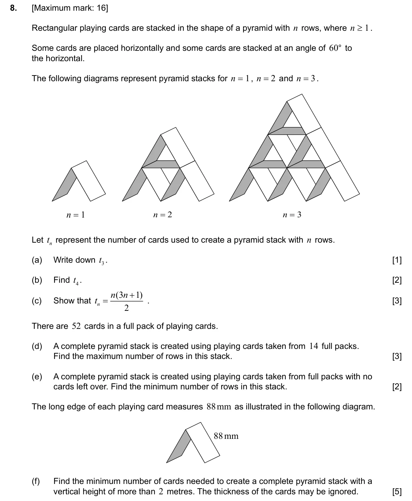
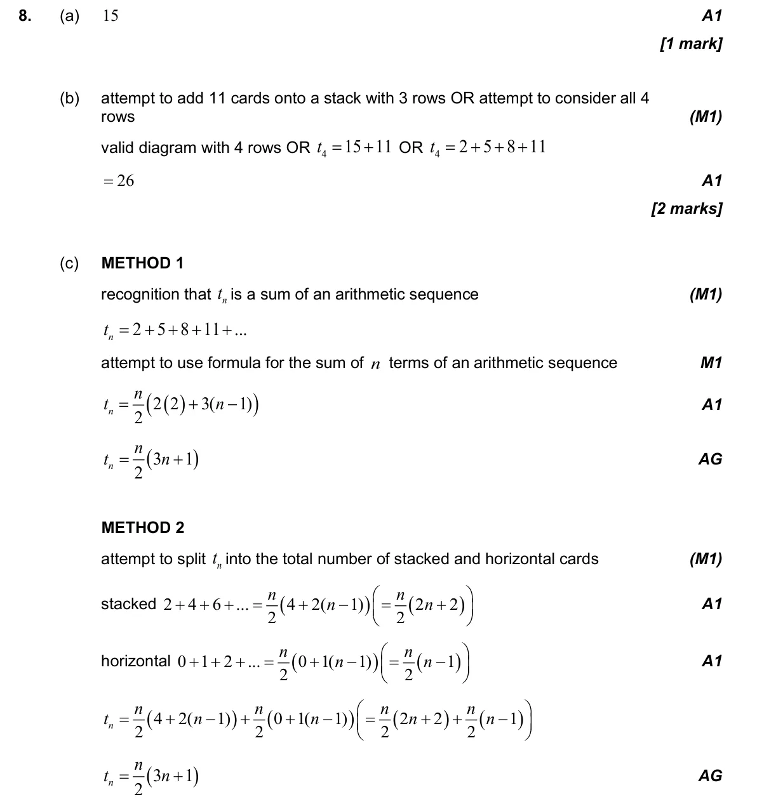
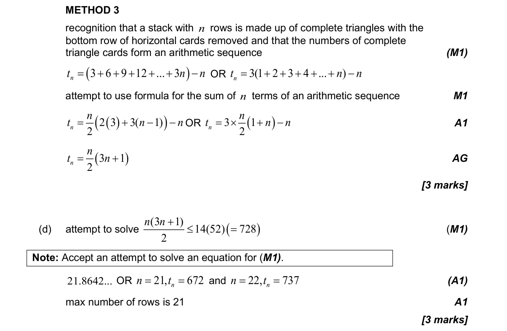
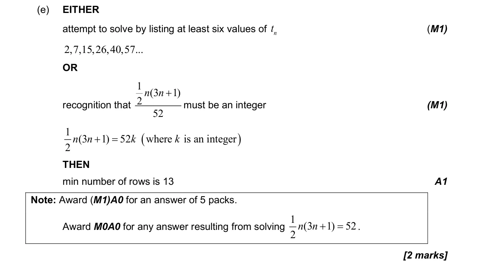
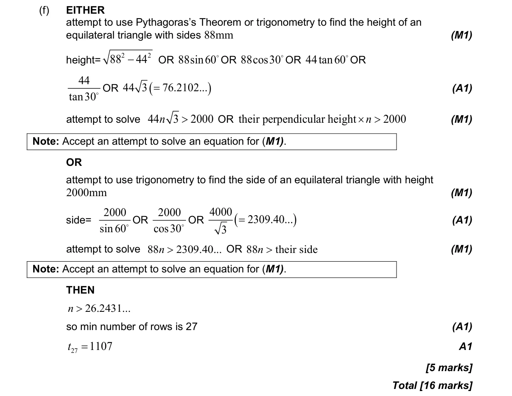

1.2 Arithmetic sequences and series3.2 2D and 3D trigonometry, sine rule, cosine rule and area3.3 Applications of trigonometry2.7 Solutions of quadratic equations and inequalities, discriminant and nature of roots
Question

Markscheme



